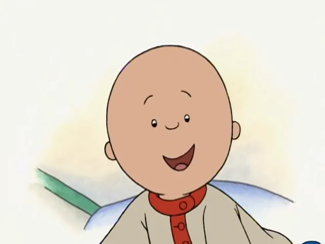
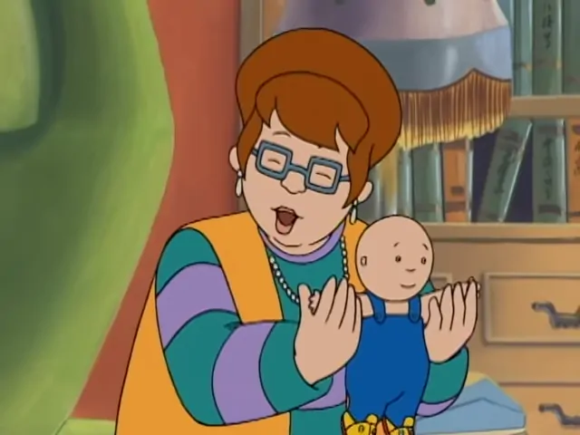

Caillouが海外で嫌われている理由
YouTubeでCaillouを見ると低評価が目立つ。通常この手のアニメーションは高評価が低評価を圧倒的に上回るものだ。
Caillouは海外で嫌われている。理由はクソガキを思わせる特徴があるからだ。redditにはCaillouhateというフォーラムもある。フォーラムの紹介文にはハゲのクソ野郎とある。クソさをまとめたブログもある。それらの意見を紹介する。
テーマソングがクソだ。高音が耳に刺さる。歌詞も間抜けでセンスがない。名前が48回も連呼される。実際は6回であるが。この特徴を際立たせたパロディがある。
Caillouはハゲていてガンを患っているかのようだ。ステージ4かもしれない。しかし見た目とは反対に健康体である。そこが視聴者に違和感を抱かせる。ハゲている説明が一切ないのも不適切だ。
顔が気持ち悪い。まつ毛がない。鼻はなくはないが抽象的すぎる。他のキャラクターも含めて奇妙なマンダリン・カラーである。低めの立襟の事だ。

導入部のCaillouの人形が裸にオーバーオール。細部に無頓着であまりにもでたらめだ。

Rosieの扱い方がひどいエピソードがある。
Caillou bad. from r/caillouhate
家にも服にも原色を多用している。
Even his fucking house looks like its gonna start bitching like the little shit it is from r/caillouhate
教育的価値もエンターテイメントとしての価値も見いだせない。エピソードに掴みどころがなく退屈だ。
Caillouはめそめそしたり意味のないところで笑う。大人をいらだたせる子供の特徴が満載だ。子供嫌いに耐えがたい苦痛を与えるアニメである。